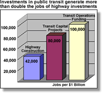

Transportation and Jobs
Surface Transportation Policy Project Fact Sheet
The transportation system should be socially equitable and strengthen civil rights; enabling all people to gain access to good jobs, education and training, and needed services. The transportation system should allow every American to participate fully in society whether or not they own a car and regardless of age, ability, ethnicity, or income. – New Transportation Charter
Transportation policy has a strong, positive relationship with job creation and access. The transportation system should support job creation and grant all people access to good jobs. Unlike past transportation decisions that have focused on short-term solutions and have ignored large sections of the population, modern transportation investments must expand opportunities and improve quality of life.
Impact of Public Transportation Projects on Job Creation
In recent years, proponents of increased investment in new highway capacity have used job-creation as a rallying cry for their cause, saying that money spent on these new roads will lead to a surge in new jobs. While transportation investment should not be seen as primarily a jobs program, economic studies indicate that transit capital investments and operations funding are even better sources of long-term job creation.According to a recent study by Cambridge Systematics, 314 jobs and a $30 million gain in sales for businesses are created for each $10 million invested in transit capital funding, and over 570 jobs are created for each $10 million in the short run. While new highway construction does lead to an increase in employment, these jobs are mostly for non-local workers: road engineers and other specialists who come in to an area for a specific job and then leave when it has been completed. On the other hand, transit investments create a wealth of employment opportunities in the short and the long run. Transit system construction leads to an impressive level of short-term job creation, and once the systems are finished, a long-term source of high-quality jobs. Of the 350,000 people directly employed by public transportation systems, more than 50 percent are operators or conductors. In addition, 10,000 to 20,000 professionals work under contract to public transportation systems or are employed by companies and government offices that support these systems. Thousands of others are employed in related services (i.e. engineering, manufacturing, construction, retail, etc.). 
With sustained local job and transit system creation comes a matching increase in tax and sales revenue for local communities. A recent report by the American Public Transit Association (APTA) found that every dollar taxpayers invest in public transportation generates $6 or more in economic returns. Business leaders now realize that metropolitan regions cannot operate effectively, or attract new business investment, without good public transit. Of the 50 largest metropolitan areas in the United States, 48 are building or expanding their transit systems, or have plans to do so. A recent survey by Jones Lang LaSalle in Property Futures found that 77 percent of New Economy companies rated access to mass transit as an extremely important factor in selecting corporate locations.
Transportation and Job Access
While two-thirds of new jobs are located in the suburbs, more than 62% of all job openings are replacement jobs, not new jobs. Most of these replacement jobs are in core built-up areas that are often not well-served by transit. Improved transit operational service in these areas can connect more workers to jobs than new investments in the suburbs. Moreover, transit-oriented development (TOD) in areas with existing transit service can turn subway stops and commuter rail stations into hubs for mixed-use development where workers can walk (or connect by a short bus ride) to jobs, housing and services. Recent transportation policies have tended to keep low-income people far from available jobs. According to the Federal Transit Administration, three-quarters of welfare recipients live in central cities or rural areas not well served by transit. While "workforce accessibility" is of increasing importance to employers in site location to improve workforce recruitment, welfare recipients are usually not located near such sites. As a result, low-income workers spend up to 36% of their household budget on transportation services, mostly to gain access to job sites.
Recent transportation policies have tended to keep low-income people far from available jobs. According to the Federal Transit Administration, three-quarters of welfare recipients live in central cities or rural areas not well served by transit. While "workforce accessibility" is of increasing importance to employers in site location to improve workforce recruitment, welfare recipients are usually not located near such sites. As a result, low-income workers spend up to 36% of their household budget on transportation services, mostly to gain access to job sites.
Public transportation systems play a key role in moving former welfare recipients into the workforce as permanent wage earners. A 1999 APTA survey revealed that an estimated 94 percent of welfare recipients attempting to move into the workforce rely on public transportation.
In order to ensure the success of federal and state welfare-to-work programs, there must be better coordination between state and local transportation departments with housing, welfare and employment agencies. Incentives for such coordination include: transit-oriented development featuring housing, jobs, childcare, and job training centers accessible to reliable public transportation.
- Under the current $75 million annual federal Job Access and Reverse Commute (JARC) initiative, public transportation systems around the nation work with state and local agencies to identify and assess mobility needs and to improve employment accessibility. These new and expanded services will provide access to jobs for 8 million households without a car.
- In Chattanooga, Tennessee, GIS mapping of welfare recipients, job locations and day care centers helps the transit agency develop transit routes that serve low-income households and provide access to jobs.
- Co-location of affordable housing with affordable transit can improve job access to low-income families. Under a Housing Incentive Program (HIP) adopted by several counties in California, local jurisdictions are provided bonus transportation dollars in return for encouraging developers to locate affordable housing within a half-mile of transit stops.
Job access, even more than job creation, is a central transportation function. Compact cities with good transit services, as well as excellent para-transit services in rural areas, can significantly improve the jobs-housing balance and reduce the cost of job access, especially to low-income families. The equitable distribution of transportation services to provide job access to all Americans must be a central goal of transportation policy.
--------------------------------------------------------------------------------
Source: http://www.transact.org/library/factsheets/jobs.asp
In accordance with Title 17 U.S.C. Section 107, this material is distributed without profit to those who have expressed a prior interest in receiving the included information for research and educational purposes.